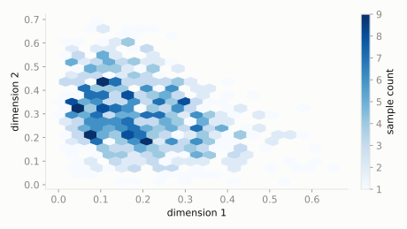

Multivariate
Dirichlet
scipy.stats.dirichlet
Intuition
Beta generalized from one proportion to a whole set of proportions that must add up to 1 -- it's the distribution *of the probability vector itself*, and is Multinomial's mathematical partner the same way Beta is Binomial's.
Formula
\[ f(x_1,\ldots,x_k) = \frac{1}{B(\alpha)}\prod_{i=1}^{k} x_i^{\alpha_i - 1}, \quad \sum_i x_i = 1 \]
| parameter | default used here | meaning |
|---|
alpha | [2, 3, 5] | concentration for each of the k proportions |
Use cases
- Bayesian prior for Multinomial category probabilities
- Topic modeling (Latent Dirichlet Allocation) in NLP
- Any 'proportions that must sum to 1' modeling problem
A funny example
Three friends are randomly splitting one whole pizza. Based on past pizza nights, one friend usually ends up with the biggest share, another usually gets a medium share, and the third usually gets the smallest -- but it varies night to night.
What's the relative likelihood of an even 1/3-1/3-1/3 split compared to a lopsided 20%-30%-50% split?
Solve it with scipy.stats
import scipy.stats as stats
import numpy as np
dist = stats.dirichlet(alpha=[2, 3, 5])
print('density at even split (1/3,1/3,1/3):', round(dist.pdf([1/3, 1/3, 1/3]), 4))
print('density at lopsided split (0.2,0.3,0.5):', round(dist.pdf([0.2, 0.3, 0.5]), 4))
density at even split (1/3,1/3,1/3): 3.4568
density at lopsided split (0.2,0.3,0.5): 8.505

Theoretical shape at the default parameters above (blue = density/PMF, orange = CDF).